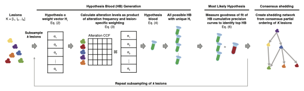

LSM
Lesion Shedding Model is a mathematical model of tumor shedding that can determine the relative shedding levels of lesions found in a patient. The LSM operates in two modes: 1) single time point mode using the most proximal cfDNA sample to the lesion biopsies, and 2) longitudinal mode where each cfDNA sample is analyzed to reveal dynamics in lesion shedding.
Method
This is a schematic view of LSM processing flow
Compute
The entire LSM pipeline can be executed by:
|
Function to compute and plot the relative shedding of lesions from cfDNA |
An example of usage can be found in this tutorial
Input/Output Format
Input Parameters
The input to the LSM model can be provided as a table in csv, as follow (including header):
param |
value |
|---|---|
outputDir |
string path to directory that all output should be created |
workingDate |
interger indicating the date of the experiment |
sampleFile |
string path to sample info CSV file |
mafFile |
string data file in a modified MAF format. By default the LSM runs in single-time point mode and analyzes all patients in the MAF file |
patientMulti |
string (primaryParticipantID) used to run LSM in longitudinal rather than single-time |
simPatient |
string (primaryParticipantID) on which to perform a simulation. This flag automatically engages this mode. |
simPatientIndex |
array If running in simulation mode, then providing this ARRAY provides the start and end of the range for the number of total simulations to run. |
nthreads |
integer number of threads |
subSampleSize |
integer number of lesions to subsample k |
discreteRange |
array range and increment size from which to draw alpha’s. Expects 3 elements - start, end, increment. E.g. “0.05,1.05, 0.25” |
startIndex |
integer Index to begin subsamplings. Each run will create a “Run[Index]” directory that contains results from that subsample. |
endIndex |
integer Index to end subsamplings. This will determine the total number of subsamplings performed. |
ccfLesionThreshold |
float The ct CCF threshold below which alterations within lesions are filtered when constructing HB. |
dropNullTissue |
Boolean to indciate whether to ignore tissues without tumor fraction data. |
edgeThres |
float Threshold above which to connect a source and target lesion in the consensus graph. |
simBloodAlphas |
array Discrete alpha values to assign to lesions in simulated blood construction. Lesions are randomly assigned each of the specified elements and the remainder are assigned 0.05, e.g. “1.0,0.6,0.3” |
addUniqSimAlterations |
integer Number of random mutation to spike into simulated blood samples. |
ccfRandom |
Boolean to indicate whether spiked in mutations are assigned CCFs randomly drawn from a uniform distribution. |
saveIntermediate |
Boolean to indicate whether to save intermediary files |
nSamplesCI |
integer number of subsamplings to perform to calculate confidence intervals |
sampThresCI |
float number indicating what fraction of runs to subsample |
An example can be found here csv
Mutation MAF FILE
The LSM expects a modified, compiled MAF file of all patient data to be analyzed with the following minimal fields containing the following:
primaryParticipantID: normalized patient ID
primarySampleID: normalized sample ID
Hugo_Symbol: Gene Hugo Symbol
Start_position: Start position of alteration
Reference_Allele: Reference Allele
Tumor_Seq_Allele2: Tumor Allele
Chromosome: Chromosome
ccf_hat: CCF or VAF value
File: Original MAF filename from which the mutation is compiled from.
Sample info FILE
The sample info file contains relevant clincial information in a CSV format with the folloowing minimal fields:
primaryParticipantID: normalized patient ID
primarySampleID: normalized sample ID
participantID: sample patient ID
sampleID: original sample ID
tumor_fraction: the tumor fraction of the sample
days_from_dx: date of sample as days from diagnosis
tissueSite: tissue from which the sample was taken. If missing leave blank. If the sample is cfDNA, then enter blood
tissueSiteSimple: additional tissue location column if a simplified tissue location desired. This may be the same value as the tissueSite for simplicity.
Output
The LSM produces an output directory as specified in the parameters file with the final consensus results. The parameters file is copied into the output directory. ConsensusDirectedNetwork_lesionOrdering contains the consensus shedding results. PNG graph images for the simplified and detailed networks are produced. In addition, CSV files describing the graph topologies as well as network files to ease import into other graphing packages are provided.
If the LSM is run in the longitudinal mode, then all output files are keyed by the specific cfDNA sample ID being analyzed.
If the LSM is run in simulation mode then all simulated runs for a given simRunIndex are output into folder SimRun[XXX]. This folder also contains a pickle object of the simulated clinical data and CSV of simulated MAF data for the respective simulation. ConsensusDirectedNetwork_lesionOrdering is created within each.
Citation
Kahn Rhrissorrakrai, Filippo Utro, Chaya Levovitz, and Laxmi Parida. Lesion Shedding Model: unraveling site-specific contributions to ctDNA. Briefing in Bioinformatics (to appear)